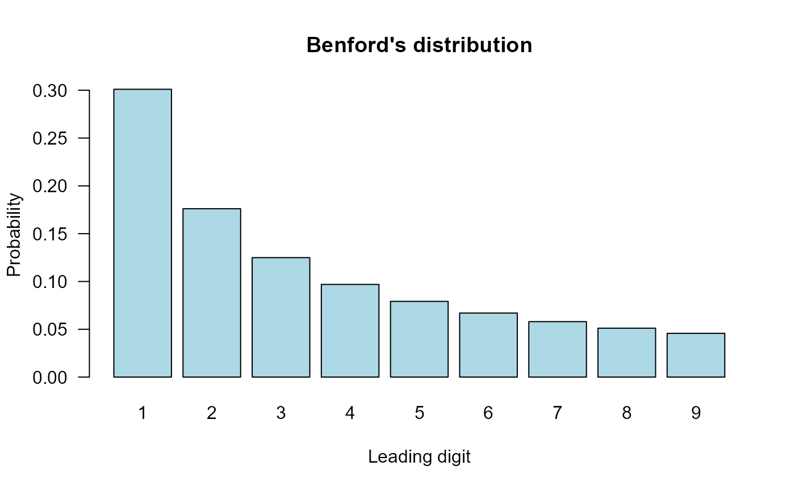
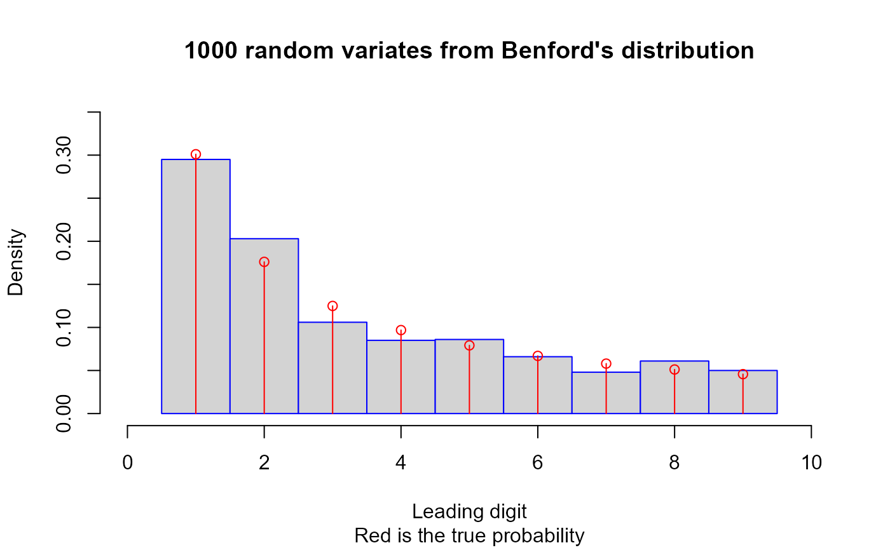

Density, distribution function, quantile function, and random generation for Benford's distribution.
Usage
dbenford(x, nDigits = 1, log = FALSE)
pbenford(q, nDigits = 1, lower.tail = TRUE, log.p = FALSE)
qbenford(p, nDigits = 1, lower.tail = TRUE, log.p = FALSE)
rbenford(n, nDigits = 1)Arguments
- x, q
a vector of quantiles, see
nDigits.- nDigits
number of leading digits, either 1 or 2. If 1 then the support of the distribution is {1, ..., 9}, else {10, ..., 99}.
- log
logical; if
TRUE, densities are given aslog(d).- lower.tail
logical; if
TRUE(default), probabilities are \(P(X \le x)\), otherwise \(P(X > x)\).- log.p
logical; if
TRUE, probabilitiespare given aslog(p).- p
a vector of probabilities.
- n
number of observations. A single positive integer. Else if
length(n) > 1then the length is taken to be the number required.
Value
dbenford() gives the density, pbenford() gives the
distribution function, qbenford() gives the quantile function, and
rbenford() generates random deviates.
Details
Benford's distribution (the significant-digit law) describes the probability distribution of the leading significant digit(s) in many naturally occurring numerical datasets. The probability of the first digit being d follows log10(1 + 1/d), with support on {1, ..., 9} for one leading digit or {10, ..., 99} for two leading digits. It is commonly applied in fraud detection and data quality assessment.
Benford's Law (aka the significant-digit law) is the empirical observation that in many naturally occurring tables of numerical data, the leading significant (nonzero) digit is not uniformly distributed in \(\{1,2,\ldots,9\}\). Instead, the leading significant digit (\(=D\), say) obeys the law $$P(D=d) = \log_{10} \left( 1 + \frac1d \right)$$ for \(d=1,\ldots,9\). This means the probability the first significant digit is 1 is approximately \(0.301\), etc.
Benford's Law was apparently first discovered in 1881 by astronomer/mathematician S. Newcomb. It started with the observation that the pages of a book of logarithms were dirtiest at the beginning and progressively cleaner throughout. In 1938, a General Electric physicist called F. Benford rediscovered the law on this same observation. Over several years he collected data from sources as different as atomic weights, baseball statistics, numerical data from Reader's Digest, and drainage areas of rivers.
Applications of Benford's Law have been as diverse as fraud detection in accounting and the design of computers.
Note
Based on code by T. W. Yee previously published in the VGAM package, adapted to conform to package standards.
References
Benford, F. (1938) The Law of Anomalous Numbers. Proceedings of the American Philosophical Society, 78, 551–572.
Newcomb, S. (1881) Note on the Frequency of Use of the Different Digits in Natural Numbers. American Journal of Mathematics, 4, 39–40.
Examples
dbenford(x <- c(0:10, NA, NaN, -Inf, Inf))
#> [1] 0.00000000 0.30103000 0.17609126 0.12493874 0.09691001 0.07918125
#> [7] 0.06694679 0.05799195 0.05115252 0.04575749 0.00000000 NA
#> [13] NaN 0.00000000 0.00000000
pbenford(x)
#> [1] 0.0000000 0.3010300 0.4771213 0.6020600 0.6989700 0.7781513 0.8450980
#> [8] 0.9030900 0.9542425 1.0000000 1.0000000 NA NaN 0.0000000
#> [15] 1.0000000
xx <- 1:9
barplot(dbenford(xx), col = "lightblue", las = 1, xlab = "Leading digit",
ylab = "Probability", names.arg = as.character(xx),
main = "Benford's distribution")

hist(rbenford(n = 1000), border = "blue", prob = TRUE,
main = "1000 random variates from Benford's distribution",
xlab = "Leading digit", sub = "Red is the true probability",
breaks = 0:9 + 0.5, ylim = c(0, 0.35), xlim = c(0, 10.0))
lines(xx, dbenford(xx), col = "red", type = "h")
points(xx, dbenford(xx), col = "red")
